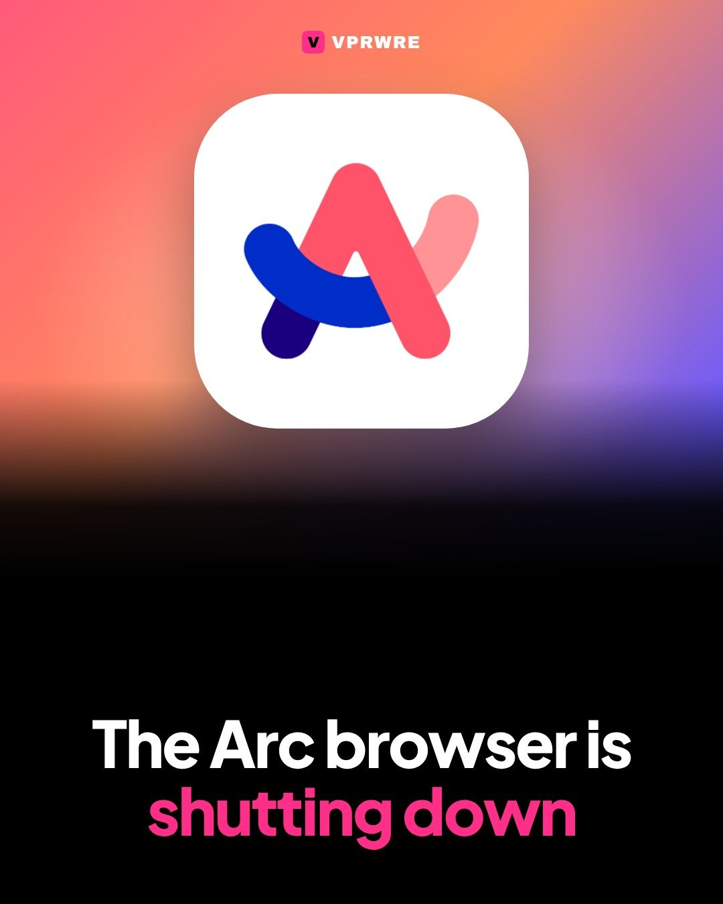
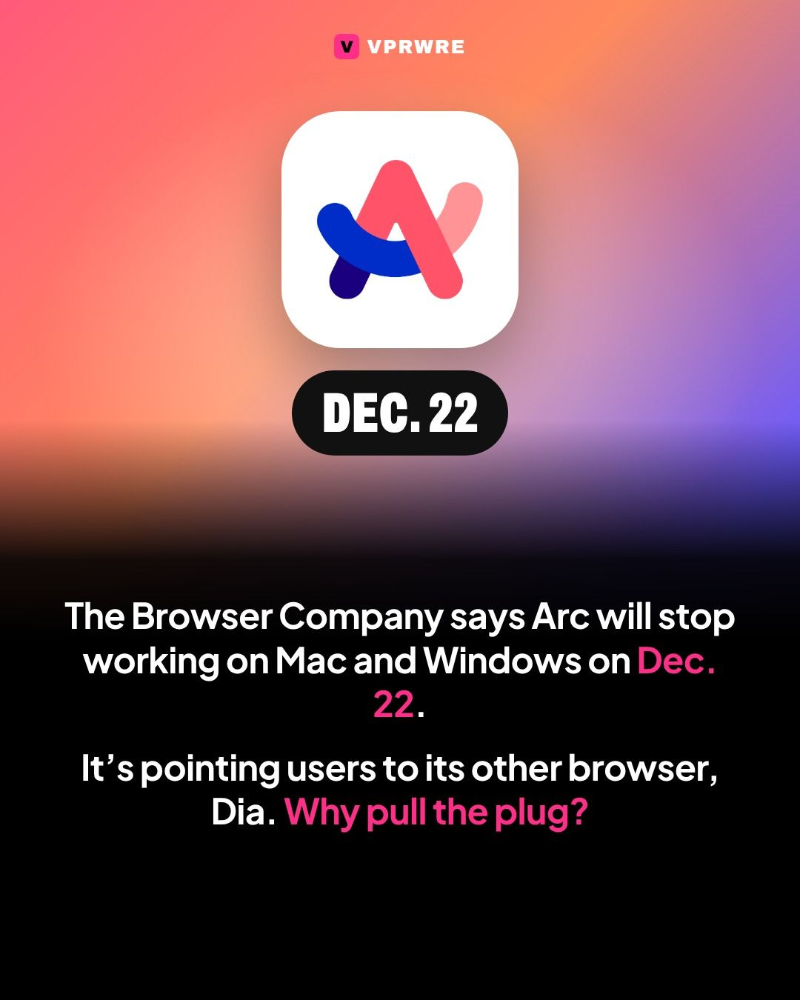
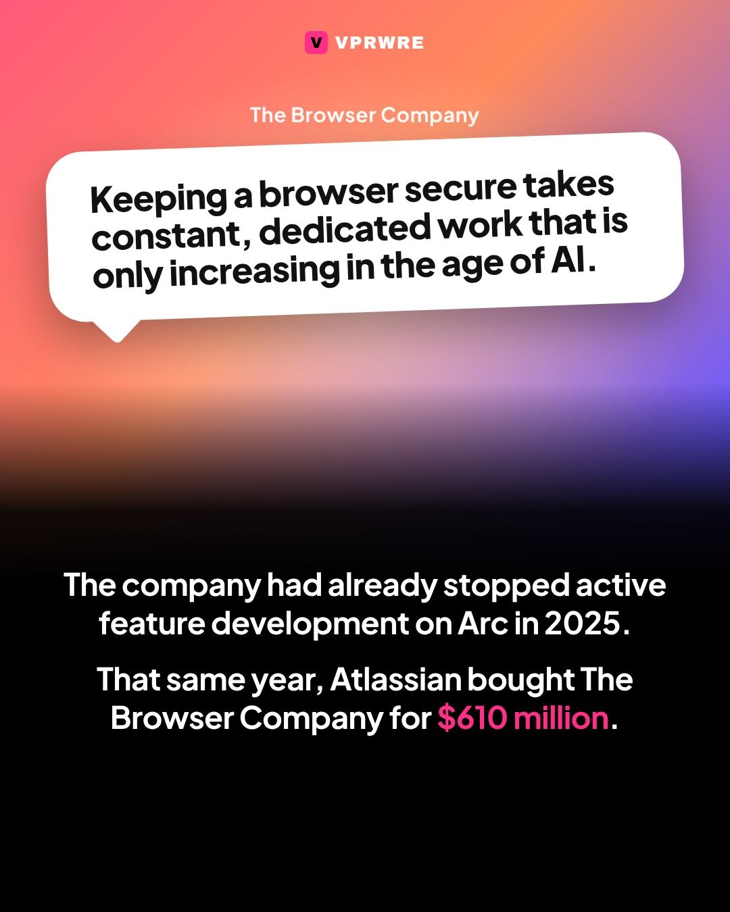
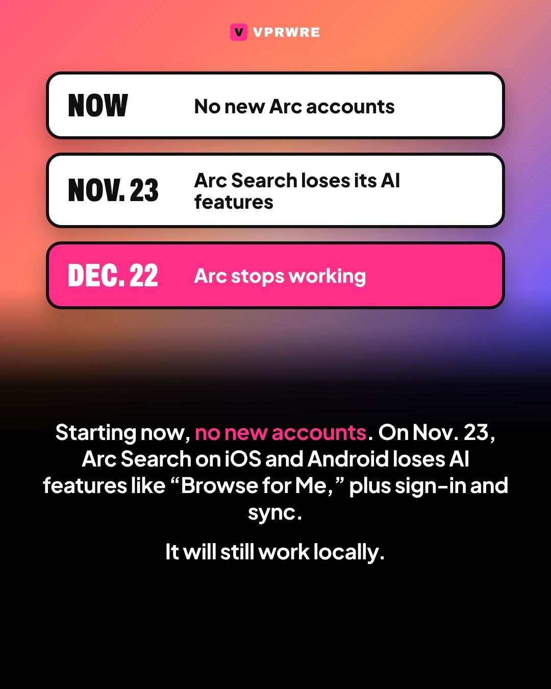
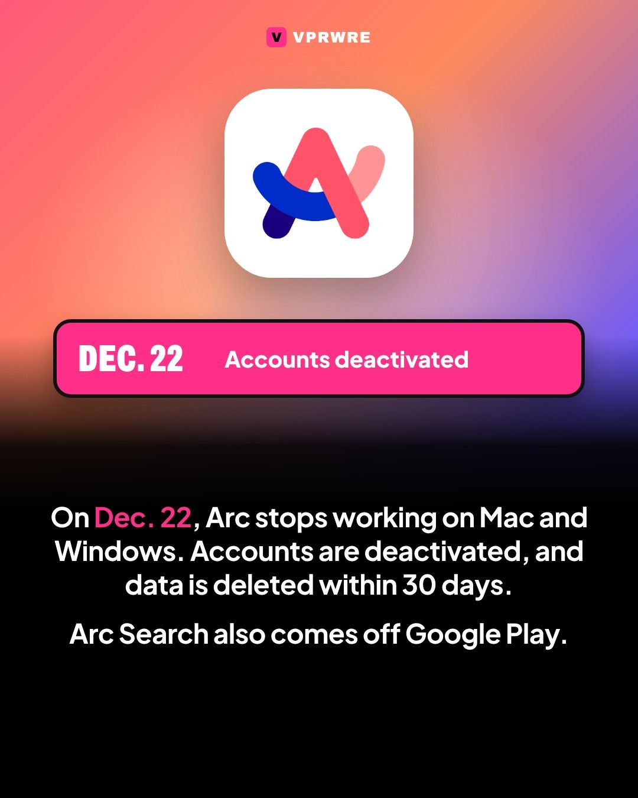
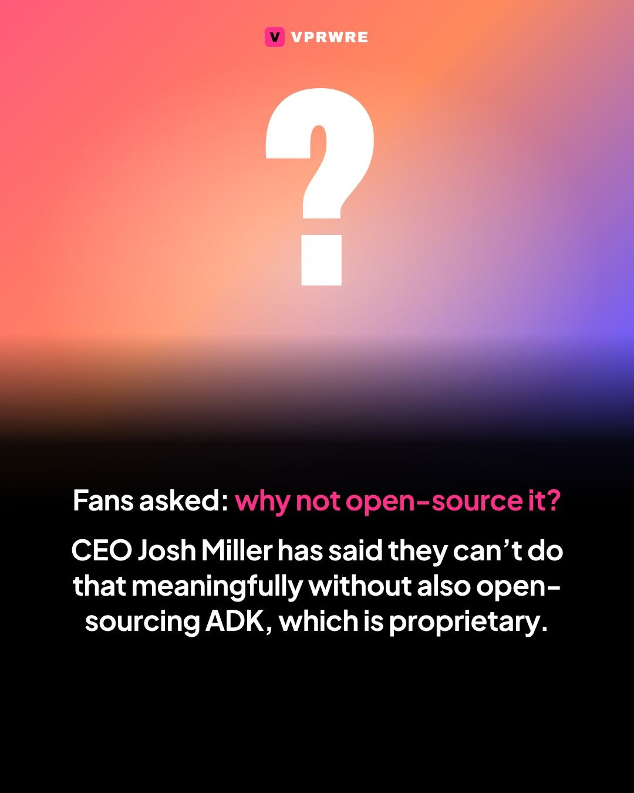
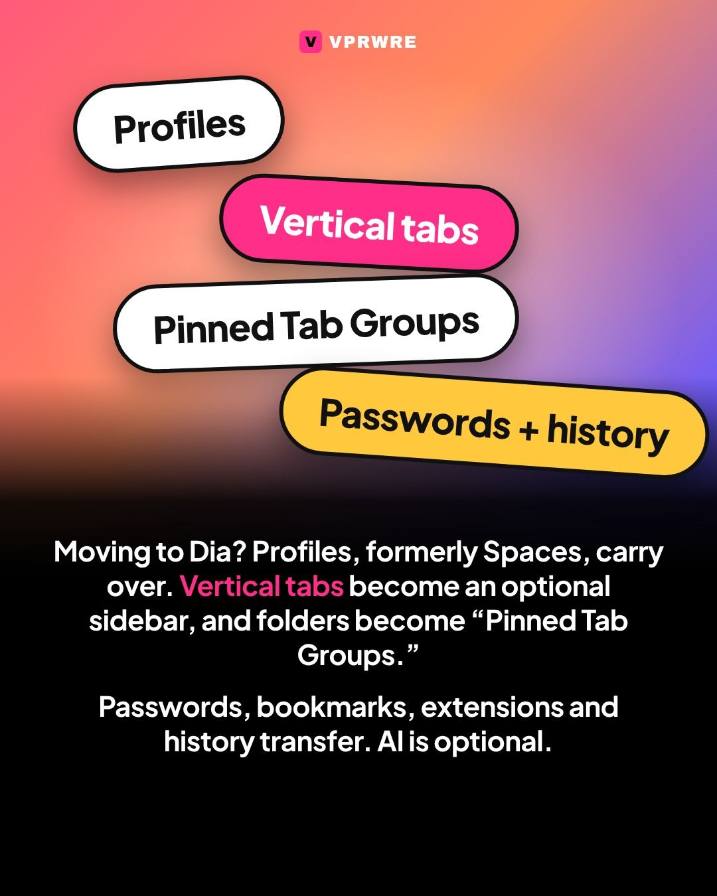

AI tools
The Arc browser is shutting down.
The Arc browser is shutting down.

The Browser Company announced Thursday that Arc will stop working on Mac and Windows on Dec. 22, and it’s pointing users to its other browser, Dia. “Keeping a browser secure takes constant, dedicated work that is only increasing in the age of AI,” the company said.
What happens when: As of Thursday, Arc no longer accepts new accounts. On Nov. 23, Arc Search on iOS and Android loses its AI features, including “Browse for Me,” along with sign-in and sync, but keeps working locally. On Dec. 22, Arc stops working on desktop, accounts are deactivated, data is deleted within 30 days, and Arc Search is removed from Google Play.
Many users asked for Arc to be open-sourced. CEO Josh Miller has previously said the company can’t do that meaningfully without also open-sourcing ADK, which is proprietary. In Dia, Arc’s Profiles (formerly Spaces) carry over, vertical tabs are available as an optional sidebar, and Folders become “Pinned Tab Groups.” Passwords, bookmarks, extensions and history transfer, Arc’s features are free in Dia, and its AI is optional.
The company stopped active feature development on Arc in 2025, and Atlassian acquired The Browser Company for $610 million that year.
Will you switch to Dia? Tell us below.
The carousel
8 slides · Open on Instagram







Disclosure: VPRWRE drafts with Claude, Anthropic’s AI.